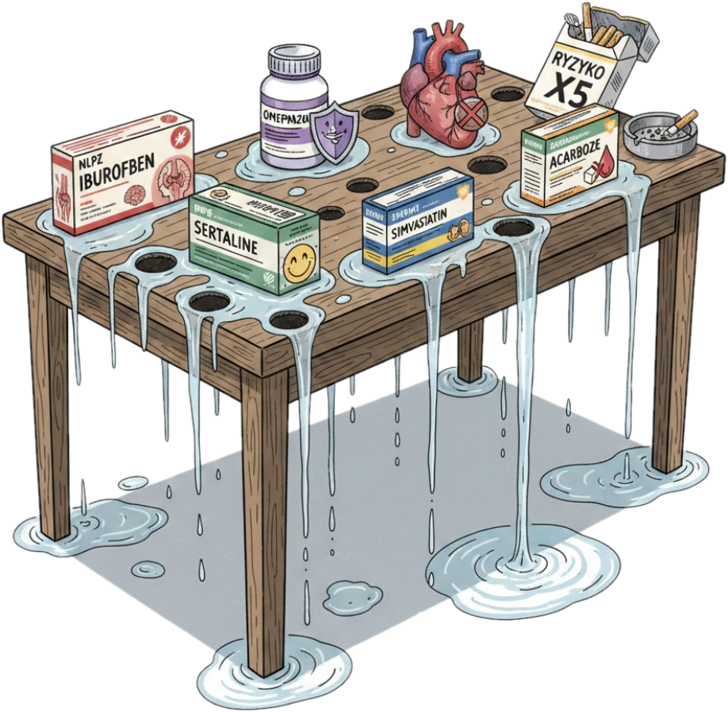
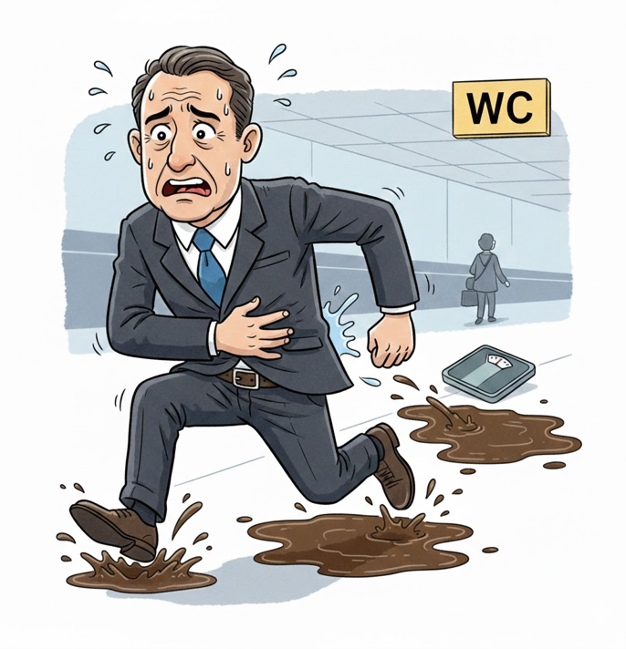
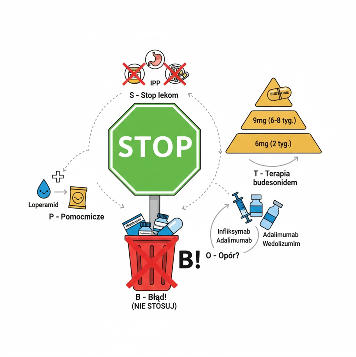

Mikroskopowe zapalenie jelita grubego jest chorobą o nieznanej etiologii.
Cechuje się obecnością charakterystycznych zmian mikroskopowych zazwyczaj bez zmian makroskopowych (endoskopowych).
Obraz histopatologiczny pozwala na wyróżnienie 2 głównych podtypów choroby:

Pomimo że wygląd jelita grubego w badaniu endoskopowym jest na ogół prawidłowy, pacjent odczuwa objawy:
Podobne objawy dają też inne jednostki chorobowe

Wyniki rutynowych badań laboratoryjnych i radiologicznych jelit są prawidłowe.
Rozpoznanie stawia się na podstawie badania histopatologicznego wycinków z jelita grubego pobranych podczas kolonoskopii:
Różnicowanie
Budezonid 9 mg/d. p.o. przez 6–8 tyg.
Gdy objawy się nie zmniejszają lub nawracają, można stosować przez kolejne tygodnie a nawet miesiące.
Inne GKS nie są zalecane.
U chorych z łagodną postacią choroby skuteczne mogą być: cholestyramina, loperamid. W przypadku braku odpowiedzi na takie leczenie można włączyć leki biologiczne i immunosupresyjne:
Nie zaleca się: pochodnych 5-ASA, bizmutu, metotreksatu, przeszczepiania flory jelitowej, probiotyków.
